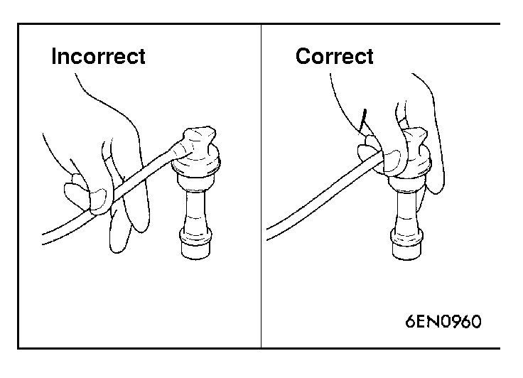

![[Previous]](https://mitsubishitechinfo.com/data/F24S/BUTTONS/fprevg.png)
![[Next]](https://mitsubishitechinfo.com/data/F24S/BUTTONS/fnextg.png)

6.IGNITION CABLES (Replace)
The ignition cables should be replaced periodically with new ones. After replacing, make sure that the ignition cables are routed properly and fully seated.
NOTE
When disconnecting an ignition cable, be sure to hold the cable boot. If the cable is disconnected by pulling on the cable alone, an open circuit might result.